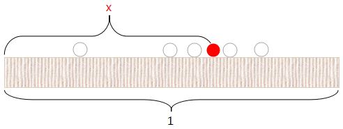

Beta 函数, Beta 分布详解
推导
第一种
$\mathrm{Beta}$ 分布一般被用于建模伯努利试验事件成功的概率的概率分布. 什么叫做伯努利试验事件成功的概率? 我们来举个例子.
如果有一枚硬币, 分为正反两面 (不一定均匀) , 那么假设你抛了 $10$ 次, 正面有 $7$ 次, 那么抛这枚硬币是正面的概率是多少呢? 当然我们一般会说是 $7/10$ , 但这只是最好的估计. 可能是 $1/10$ 吗? 当然可能, 但是可能性不高. 这里的 $7/10$ , $1/10$ 就是所谓伯努利试验事件成功的概率. 而其服从的分布就是伯努利试验事件成功的概率的概率分布.
二项分布相信大家高中就都已经接触过了
$$
P(x) = \binom{n}{x}q^x(1-q)^{n-x}
$$
这是已知参数 $n, q$ 来估计 $x$ , 我们同样可以将其等价地写为 $P(x\mid q)$ . 那如果我们知道了 $n,x$ , 要如何估计 $q$ 呢? 也就是如何求出 $P(q\mid x)$ (省略了 $n$ 是为了方便写公式, 毕竟两个条件概率都是已知 $n$ 的) .
根据贝叶斯公式, 我们有
$$
P(q\mid x) = \frac{P(x\mid q)P(q)}{P(x)}
$$
其中 $P(x)$ 是常量 (因为我们已知 $x$ ) . 而 $P(q)$ 是多少呢? $P(q)$ 被称为先验分布, 在我们对某一随机变量一无所知的时候, 一般可以认为它服从均匀分布. 那么, 就有
$$
p(q\mid x)\propto P(q\mid x)\propto P(x\mid q)\propto q^x(1-q)^{n-x}
$$
其中 $p(q\mid x)$ 为随机变量 $Q$ 的概率密度函数, 概率密度函数需要满足在定义域内积分为 $1$ . 我们乘上常数 $k$ , 使其满足这个性质.
记 $x = a, n-x=b, B(a+1,b+1)=k^{-1}$ , 也就是说
$$
B(a,b) = \int_0^1q^{a-1}(1-q)^{b-1}\,\mathrm{d}q
$$
这个 $B(a,b)$ 即为 $\mathrm{Beta}$ 函数, 这即是 $\mathrm{Beta}$ 函数的由来. 而 $\mathrm{Beta}$ 分布的概率密度函数则为
$$
f(q)=\frac{1}{B(a,b)}q^{a-1}(1-q)^{b-1}
$$
第二种
假设你和我玩一个游戏, 我说
我有一个魔盒, 上面有一个按钮. 我每按下一次按钮, 就会均匀的产生一个 $[0,1]$ 之间的随机数. 现在我连按 $10$ 次, 那么你猜猜, 第 $7$ 大的数字是多少? 误差不超过 $0.01$ 就算赢.
用数学语言来描述就是
- $X_1,X_2\cdots, X_n\mathop{\sim}\limits^{\mathrm{iid}}Uniform(0,1),$
- 把这 $n$ 个随机变量排序后得到顺序统计量 $X_{(1)},X_{(2)},\cdots,X_{(n)},$
- 问 $X_{(k)}$ 的分布是什么
对上面的游戏而言, $n=10,k=7$ . 如果我们求出了 $X_{(7)}$ 的分布, 那么用概率密度的极值点去猜测是最好的策略.
我们尝试计算 $X_{(k)}$ 落在区间 $[x,x+\Delta x]$ 的概率 $P(x 把 $[0,1]$ 区间分为 $3$ 段, 即 $[0,x),[x,x+\Delta x],(x+\Delta x,1]$ . 假设 $X_{(k)}$ 在区间 $[x,x+\Delta x]$ 中, 我们先考虑一个简单情形: 不失一般性, 我们先考虑一个符合上述要求的事件 $E$ . 则有 那么就有 也就是说, 在 $[x, x+\Delta x]$ 中的数字超过 $1$ 个, 那么概率就是 $o(\Delta x)$ . 因此 $X_{(k)}$ 的概率密度函数为 看起来完全不同的两种问题, 居然能推导出完全相同的式子!  假设向长度为 $1$ 的桌面丢一颗红球, 设红球与桌面最左边的距离为 $x$ , 那么随意再丢一颗白球, 在红球左边的概率为 $x$ . 那么丢 $n$ 次白球, 其中再红球左边的次数为 $k$ 次, 那么随机变量 $K$ 显然服从参数为 $n, x$ 的二项分布. 即 $K\sim Binomial(n,x)$ . 那么有 还记得上面的游戏吗? 为了降低难度, 我又说: 我再次按下 $5$ 次按钮, 然后得到 $5$ 个 $[0,1]$ 之间的随机数, 然后我会告诉你这 $5$ 个数与之前第 $7$ 大的数字相比, 谁大谁小, 然后你继续猜第 $7$ 大的数字是多少. 假设这 $5$ 个数有 $3$ 个大于第 $7$ 大的数字, $2$ 个小于. 实际上, 这个 “降低难度” 的游戏其实是同一个游戏, 把它重新表达一下, 其实和下面这个游戏是等价的: 我有一个魔盒, 上面有一个按钮. 我每按下一次按钮, 就会均匀的产生一个 $[0,1]$ 之间的随机数. 现在我连按 $10+5$ 次, 那么你猜猜, 第 $7+2$ 大的数字是多少? 误差不超过 $0.01$ 就算赢. 也就是说, 本来 $X_{(7)}$ 的分布是 $Beta(7,10-7+1)$ . 给定另外的数据 $M_1\sim B(5,X_{(7)}),M_2=5-M_1$ (二项分布, $M_1$ 是小于第 $7$ 大数字的个数, $M_2$ 是大于), 那么 $X_{(7)}$ 的分布就会变成 $Beta(7+M_1,10-7+1+M_2)$ . 推广至一般情况, 即 贝叶斯参数估计的基本过程是 合起来就是 $\mathrm{Dirichlet}$ 分布其实就是多维的 $\mathrm{Beta}$ 分布. 继续上面的游戏, 我可以说: 我再按 $20$ 次按钮, 那么你猜猜, 第 $7$ 大的数字和第 $14$ 大的数字分别是多少? 按照上面的方式, 转换为数学语言即 同样推导过程, 有 这里其实只有两个变量即 $x_1, x_2$ , 而 $x_3 = 1-x_1-x_2$ , 写成三个变量的形式只是为了对称. 令 $k_1=\alpha_1,k_2=\alpha_2,n-k_1-k_2+1=\alpha_3$ 有 同样的推导, 这里就不细说了, 结果就是 当然, 我们还可以继续提高维度, 得到更高维的 $\mathrm{Dirichlet}$ 分布以及 $\mathrm{Dirichlet-Multinomial}$ 共轭. 一般形式的 $\mathrm{Dirichlet}$ 分布定义如下 如果 $p\sim Beta(t\mid \alpha, \beta)$ , 则
$$
\begin{aligned}
E=\{&X_1\in[x,x+\Delta x],\\\\
&X_i\in[0,x)\;\;\;\;(j=2,\cdots,k),\\\\
&X_j\in(x+\Delta x,1]\;\;\;\;(i=k+1,\cdots,n)\}
\end{aligned}
$$
$$
\begin{aligned}
P(E)&=\prod_{i=0}^nP(X_i)\\\\
&=x^{k-1}(1-x-\Delta x)^{n-k}\Delta x\\\\
&=x^{k-1}(1-x)^{n-k}\Delta x+o(\Delta x)
\end{aligned}
$$
其中 $o(\Delta x)$ 表示 $\Delta x$ 的高阶无穷小. 我们来计算一下与 $E$ 事件等价的事件有多少个. 首先, 在 $[x,x+\Delta x]$ 中的数一共有 $n$ 种取法, 然后在 $[0, x)$ 中的数有 $\binom{n-1}{k-1}$ 种取法, 而一旦给定前面的数所在的区间, $(x+\Delta x,1]$ 区间中的数也就给定. 于是一共有 $n\binom{n-1}{k-1}$ 种情况.
$$
\begin{aligned}
E'=\{&X_1,X_2\in[x,x+\Delta x],\\\\
&X_i\in[0,x)\;\;\;\;(j=3,\cdots,k),\\\\
&X_j\in(x+\Delta x,1]\;\;\;\;(i=k+1,\cdots,n)\}
\end{aligned}
$$
$$
\begin{aligned}P(E')&=\prod_{i=0}^nP(X_i)\\\\&=x^{k-2}(1-x-\Delta x)^{n-k}(\Delta x)^2\\\\&=o(\Delta x)\end{aligned}
$$
$$
\begin{aligned}
f(x) &= \lim_{\Delta x\rightarrow0}\frac{P(x
$$
f(x) = \frac{\Gamma(a+b)}{\Gamma(a)\Gamma(b)}x^{a-1}(1-x)^{b-1}
$$
下面我们会证明 $B(a,b)=\frac{\Gamma(a)\Gamma(b)}{\Gamma(a+b)}$ , 也就是说
$$
f(x)=\frac{1}{B(a,b)}x^{a-1}(1-x)^{b-1}
$$
$\frac{1}{B(a,b)}x^{a-1}(1-x)^{b-1}$ 即为 $Beta$ 分布的概率密度函数.Beta 函数与 Gamma 函数的关系
$$
P(K=k\mid x)=\binom{n}{k}x^k(1-x)^{n-k}
$$
根据贝叶斯公式, 有
$$
P(K=k,x) = P(K=k\mid x)P(x)
$$
由于 $P(x)$ 是均匀分布. 那么求边缘概率有
$$
\begin{aligned}
P(K=k) &= \sum_{x}P(K=k\mid x)P(x)\\\\
&=\int_0^1\binom{n}{k}x^k(1-x)^{n-k}\,\mathrm{d}x\\\\
&=\binom{n}{k}\int_0^1x^k(1-x)^{n-k}\,\mathrm{d}x
\end{aligned}
$$
现在我们换一种方式丢球, 等价的求出 $P(K=k)$ . 先把 $n+1$ 个球全部丢出, 然后任选一个球为红球, 那么此时任意一个球被选到的概率都是 $1/(n+1)$ 因此其左边球的数量为 $n$ 的概率也都为 $1/(n+1)$ (每颗球的左边球数量都不同, 而且数量范围在 $0\sim n$ ) . 因此我们有
$$
\begin{aligned}
\binom{n}{k}\int_0^1x^k(1-x)^{n-k}\,\mathrm{d}x&=\frac{1}{n+1}\\\\
\int_0^1x^k(1-x)^{n-k}\,\mathrm{d}x&=\frac{k!(n-k)!}{(n+1)!}
\end{aligned}
$$
令 $k=a-1,n-k=b-1$, 根据 $\mathrm{Gamma}$ 函数的定义, 有
$$
\begin{aligned}
\int_0^1x^{a-1}(1-x)^{b-1}\,\mathrm{d}x&=\frac{(a-1)!(b-1)!}{(a+b-1)!}\\\\
B(a,b)&=\frac{\Gamma(a)\Gamma(b)}{\Gamma(a+b)}
\end{aligned}
$$
Beta-Binomial 共轭
$$
先验分布+数据的知识=后验分布
$$
上面第一点其实就是先验分布即 $Beta(p\mid k,n-k+1)$ , 第二点就是数据的知识 $m_1,m_2$ ,第三点就是后验分布即 $Beta(p\mid k+m_1,n-k+1+m_2)$ .
$$
Beta(p\mid k,n-k+1)+BinomCount(m_1,m_2)=Beta(p\mid k+m_1,n-k+1+m_2)
$$
同样我们可以写为
$$
Beta(p\mid a,b)+BinomCount(m_1,m_2)=Beta(p\mid a+m_1,b+m_2)
$$
这就是所谓 $\textbf{Beta-Binomial}$ 共轭 .Dirichlet 分布
$$
\begin{aligned}&\,\;\;\;\;P\Big(X_{(k1)}\in (x_1,x_1+\Delta x),X_{(k_1+k_2)}\in(x_2, x_2+\Delta x)\Big)\\\\&=n(n-1)\binom{n-2}{k_1-1,k_2-1}{x_1}^{k_1-1}{x_2}^{k_2-1}{x_3}^{n-k_2-k_1}(\Delta x)^2\\\\&=\frac{n!}{(k_1-1)!(k_2-1)!(n-k_1-k_2)!}{x_1}^{k_1-1}{x_2}^{k_2-1}{x_3}^{n-k_2-k_1}(\Delta x)^2\\\\&=\frac{\Gamma (n+1)}{\Gamma (k_1)\Gamma (k_2)\Gamma (n-k_1-k_2+1)}{x_1}^{k_1-1}{x_2}^{k_2-1}{x_3}^{n-k_2-k_1}(\Delta x)^2\end{aligned}
$$
因此 $X_{(k_1)}$ 与 $X_{(k_1+k_2)}$ 的联合分布为
$$
f(x_1,x_2,x_3)=\frac{\Gamma (n+1)}{\Gamma (k_1)\Gamma (k_2)\Gamma (n-k_1-k_2+1)}{x_1}^{k_1-1}{x_2}^{k_2-1}{x_3}^{n-k_2-k_1}
$$
$$
f(x_1,x_2,x_3)=\frac{\Gamma (\alpha_1+\alpha_2+\alpha_3)}{\Gamma (\alpha_1)\Gamma (\alpha_2)\Gamma (\alpha_3)}{x_1}^{\alpha_1-1}{x_2}^{\alpha_2-1}{x_3}^{\alpha_3-1}
$$Dirichlet-Multinomial 共轭
$$
Dir(\vec p\mid \vec k) + MultCount(\vec m)=Dir(\vec p\mid \vec k+\vec m)
$$
其中 $\vec p=(p_1,p_2,p_3),p_3=1-p_1-p_2$ (同样为了更对称) .
$$
Dir(\vec p\mid\vec \alpha)=\frac{\Gamma(\sum_{k=1}^K \alpha_k)}{\sum_{k=1}^K\Gamma(\alpha_k)}\prod_{k=1}^K{p_k}^{\alpha_k-1}
$$
多项分布定义为
$$
Mult(\vec n\mid \vec p,N)=\binom{N}{\vec n}\prod_{k=1}^K{p_k}^{n_k}
$$
这两个分布是共轭关系.Deta, Dirichlet 分布的期望
$$
\begin{aligned}E(p)&=\int_0^1t\cdot \frac{\Gamma(\alpha+\beta)}{\Gamma(\alpha)\Gamma(\beta)}t^{\alpha-1}(1-t)^{\beta-1}\,\mathrm{d}t\\\\&=\frac{\Gamma(\alpha+\beta)}{\Gamma(\alpha)\Gamma(\beta)}\int_0^1t^{\alpha}(1-t)^{\beta-1}\,\mathrm{d}t\\\\\end{aligned}
$$
而
$$
\int_0^1Beta(t\mid \alpha+1,\beta)=\int_0^1\frac{\Gamma(\alpha+\beta+1)}{\Gamma(\alpha+1)\Gamma(\beta)}t^{\alpha}(1-t)^{\beta-1}\,\mathrm{d}t=\frac{\Gamma(\alpha+\beta+1)}{\Gamma(\alpha+1)\Gamma(\beta)}\int_0^1t^{\alpha}(1-t)^{\beta-1}\,\mathrm{d}t=1
$$
于是
$$
\begin{aligned}E(p)&=\frac{\Gamma(\alpha+\beta)}{\Gamma(\alpha)\Gamma(\beta)}\int_0^1t^{\alpha}(1-t)^{\beta-1}\,\mathrm{d}t\\\\&=\frac{\Gamma(\alpha+\beta)}{\Gamma(\alpha)\Gamma(\beta)}\frac{\Gamma(\alpha+1)\Gamma(\beta)}{\Gamma(\alpha+\beta+1)}\\\\&=\frac{\alpha}{\alpha+\beta}\end{aligned}
$$
对于 $\mathrm{Beta}$ 分布的多维形式 $\mathrm{Dirichlet}$ 分布也有类似的结论, 即如果 $\vec p\sim Dir(\vec t\mid\vec\alpha)$ , 那么有
$$
E(\vec p)=\left(\frac{\alpha_1}{\sum_{k=1}^K\alpha_k},\frac{\alpha_2}{\sum_{k=1}^K\alpha_k},\cdots,\frac{\alpha_K}{\sum_{k=1}^K\alpha_k}\right)
$$参考资料
网络资料